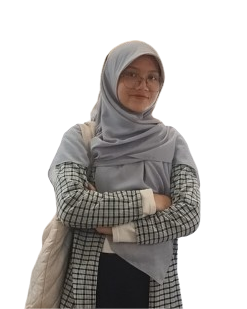

Salwa Khairunnisa
College Student | Learner
Seorang mahasiswa program studi Sistem dan Teknologi Informasi yang tertarik dengan Artificial Intelligence, Data Analyst, dan Inovasi Digital.

Education
MAN 19 Jakarta
2020 - 2023Peminatan Matematika dan Ilmu Alam
Universitas Negeri Jakarta
2024 - 2028 (expected)Sistem dan Teknologi Informasi
Experience
Anggota OSIS Seksi Kewarganegaraan
2021 – 2022MAN 19 Jakarta
Anggota Karya Ilmiah Remaja
2021 – 2023MAN 19 Jakarta
Sekretaris Sahabat Muslim Fakultas Teknik
2024 - 2025 (aktif)Universitas Negeri Jakarta
Staff Dept. Islamic Mentoring Centre FSI Al-Biruni
2025 - 2026 (aktif)Universitas Negeri Jakarta
Skills
HTML & CSS
Canva
Microsoft Word & Excel
Mathematic
Problem Solving
Contact
Telp: +62 85697335298
Email: salwaprem7@email.com
LinkedIn: linkedin.com/in/salwa-khairunnisa